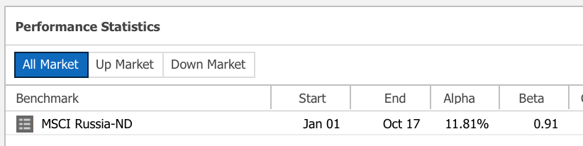
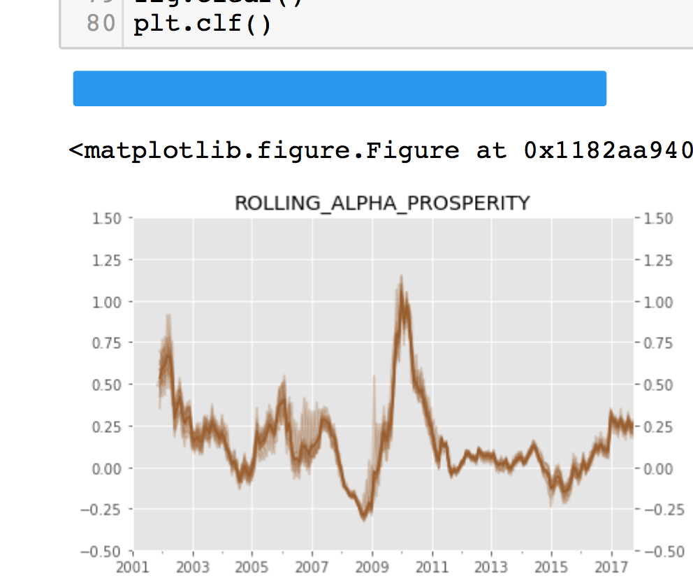

Contact info:
What is alpha?
Let's check...
An alpha of 1% means the investment's return on investment over a selected period of time was 1% better than the market during that same period; an alpha of -1 means the investment underperformed the market.
In the context of allocators (endowments, fund-of-funds, etc.)
Here is a snapshot from a tool we use at my firm....
...so here is a snapshot of rolling alpha...
...so let's check sensitivity
Combination of:
| known knowns |
known unknowns |
| unknown knowns |
unknown unknowns |
| known knowns |
known unknowns |
| unknown knowns |
unknown unknowns |
Drivers:
| known knowns |
known unknowns |
| unknown knowns |
unknown unknowns |